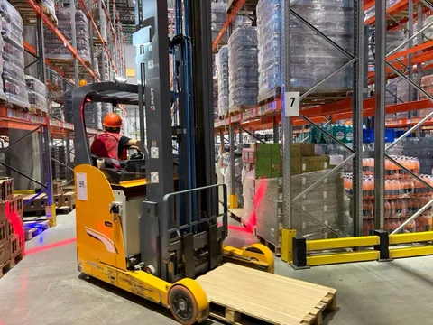

Но у нас же кроме дарксторов есть еще множество объектов инфраструктуры, нуждающихся в роботизации, в том числе распределительные центры. Их намного меньше, но они куда масштабней. И там задачи и подходы к роботизации совсем другие.
На РЦ мы пока в самом начале пути - решения только предстоит вырабатывать и пилотировать. В первую очередь хочется за счет роботизации сделать процессы более стабильными, эффективными, прогнозируемыми и качественными. Так-то у нас и без того практически образцово-показательные РЦ, но всегда хочется большего. Роботы реже могут не выйти на смену, реже едят, курят и залипают в телефон, не забывают надеть каску - все это порой свойственно иным людям. Основных направления, в которые хотим смотреть, три.
Очевидно, нужны горизонтальные и вертикальные перемещения палет. И, очевидно, это не получится сделать одним решением - скорее всего, их нужно целых три - робо-ступа для подвоза и робо-ричтраки для подъема на две высотные категории - на 6 и на 10 метров (просто потому что все поднимать десятками слишком дорого). Шутки про forklift certified - сюда.
Более сложная задача - инвентаризация. Существуют решения на базе самоходной платформы с мачтой, по которой вертикально двигается камера, считывающая данные - штрихкоды палет и другие их показатели. Но основная сложность в том, что мы хотим сверять не только палетоместа, но и штучки. А как посчитать, сколько штучек замотано в палете? Вероятно, потребуется computer vision, который на основе известных весо-габаритных характеристик сможет сверить объем палеты с нормой штучек на стоке. Есть гипотеза, что для оценки объема потребуется несколько ракурсов палеты, и я пока не уверен, что это удобно делать с мачты, поэтому не исключено, что будем смотреть также в сторону коптеров, которыми удобней получить разные ракурсы палет.
Пожалуй, самая понятная задача - клининг. Тут существует уже немало решений, которые можно пробовать. Хотя и тут нашлась засада - нужно либо два робо-уборщика, либо сложный комбайн, чтобы и относительно крупный мусор (обрывки стрейча, щепки от палет, кусочки картона) убирать, и влажную уборку производить. Будем исследовать варианты.
И все это с высокой степенью автономности, предельной точностью, хорошей скоростью и минимальными простоями. Но мы справимся. Потому что сами продукты на полках не окажутся, а вас кормить как-то надо. В следующий раз, когда будете хомячить чипсики, просто задумайтесь, какой путь они до вас проделали, сколько там было касаний, и сколько из этого еще можно роботизировать. А мы пойдем дальше оптимизировать сапплай-чейн.
